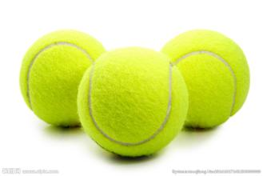

MyFavorite

网球是一项优美而激烈的体育运动，网球运动的由来和发展可以用四句话来概括：孕育在法国，诞生在英国，开始普及和形成高潮在美国，现在盛行全世界，被称为世界第二大球类运动。
网球通常在两个单打球员或两对双打组合之间进行。球员在网球场上隔着球网用网球拍击打网球。
现代网球运动诞生于19世纪的英国伯明翰。在20世纪中，网球在世界各地得到广泛发展，并成为一项世界性的体育运动。最受关注的网球比赛是每年举办的四项网球四大满贯赛事。